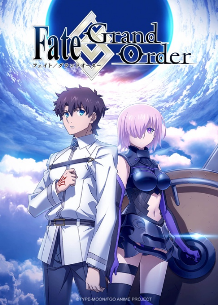
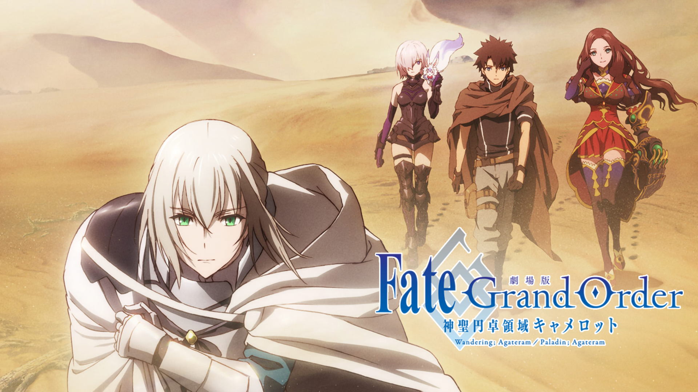
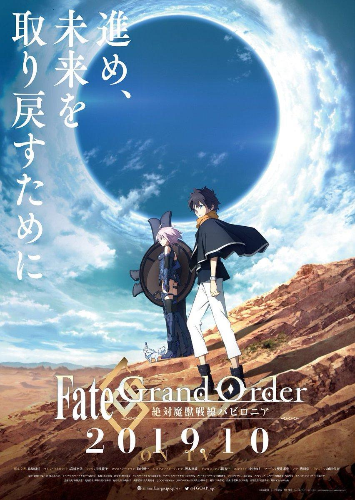
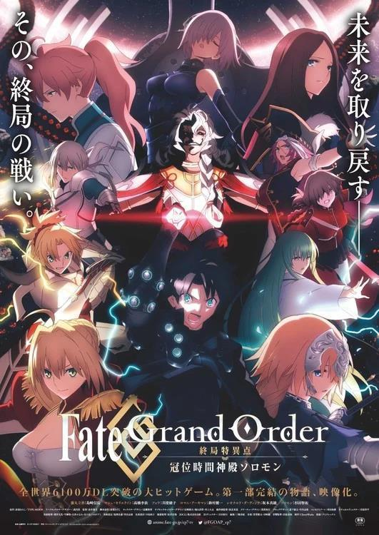
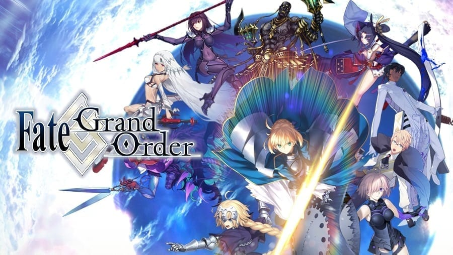

bienvenido a Fate/Grand Order
Grand order o FGO para abreviar es un juego que salio el 29/7/2015 y fue un gran exito en japon, debido a eso el 31/12/2016 se emitio una pelicula de fgo que tambien fue un exito y debido a eso siguieron sacando mas contenido del mismo.
Fate/Grand Order: First Order
FGO:First Order es la pelicula que se emitio el 31/12/2016. dura aproximadamente 1 hrs 10 min Explica todo lo que vendria a ser las primeras horas de juego.
vengo a explicarles algo para que no se asusten, La casa que se encargo de animar FGO debido a que de la primera singularidad a el final de la quinta singularidad trama en el juego apenas avanza. por eso la casa de animacion pasa a la sexta singularidad directamente.
Fate/Grand Order THE MOVIE Divine Realm of the Round Table: Camelot Wandering; Agateram
Fate/Grand Order THE MOVIE Divine Realm of the Round Table: Camelot Wandering; Agateram (o la sexta singularidad) es la continuacion de la historia y son 2 peliculas de 1 hr y 30 min aproximadamente y continua la historia de nuestros protagonista por la sexta singularidad.
Fate/Grand Order: Absolute Demonic Front - Babylonia
Fate/Grand Order: Absolute Demonic Front - Babylonia (septima singularidad) continua a la sexta singularidad y consta de un cap especial (Fate/Grand Order: Zettai Majuu Sensen Babylonia - Initium Iter) y una serie de 21 capitulos.
Fate/Grand Order: Final Singularity - The Grand Temple of Time: Solomon
Fate/Grand Order: Final Singularity - The Grand Temple of Time: Solomon (ultima singularidad) es el final de la aventura de nuestros protagonista y consta de una pelicula y dura 1 hrs y 30 min aprox
Fate/Grand Order el juego
Este es el juego que a dia de hoy le siguen sacando actualizaciones.En caso de que tengas ganas de averiguar que pasa entre FGO first order y la Sexta singularidad o te quedaste con ganas de saber que pasa despues de la ultima singularidad debido a que la historia sigue.siempre podes jugarlo o ver un resumen.Es un juego tipo gacha como el famoso genshin impact y tiene una jugabilidad de cartas y es por turnos.